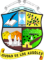

Ahuachapán
Fue fundado el 9 de febrero de 1869.
Cantidad de habitantes (2014): 375,496
De la zona occidental del país.
Municipios
- Ahuachapán
- Apaneca
- Atiquizaya
- Concepción de Ataco
- El Refugio
- Guaymango
- Jujutla
- San Francisco Menéndez
- San Lorenzo
- San Pedro Puxtla
- Tacuba
- Turín
Cabañas
Fue fundado el 10 de febrero de 1873.
Cantidad de habitantes (2017): 215,400
De la zona paracentral del pais.
Municipios
- Cinquera
- Dolores
- Guacotecti
- Ilobasco
- Jutiapa
- San Isidro
- Sensuntepeque
- Tejutepeque
- Victoria
Chalatenango

Fue fundado en el año de 1855.
Cantidad de habitantes (2018): 275,100
De la zona central del país.
Municipios
- Agua Caliente
- Arcatao
- Azacualpa
- Cancasque
- Chalatenango
- Citalá
- Comapala
- Concepción Quezaltepeque
- Dulce Nombre de María
- El Carrizal
- El Paraíso
- La Laguna
- La Palma
- La Reina
- Las Flores
- Las Vueltas
- Nombre de Jesús
- Nueva Concepción
- Nueva Trinidad
- Ojos de Agua
- Potonico
- San Antonio de la Cruz
- San Antonio Los Ranchos
- San Fernando
- San Francisco Lempa
- San Francisco Morazán
- San Ignacio
- San Isidro Labrador
- San Luis del Carmen
- San Miguel de Mercedes
- San Rafael
- Santa Rita
- Tejutla
Cuscatlán
Fue fundado en el año de 1835.
Cantidad de habitantes (2018): 232,238
De la zona central del país.
Municipios
- Cojutepeque
- Candelaria
- El Carmen
- El Rosario
- Monte San Juan
- Oratorio de Concepción
- San Bartolomé Perulapía
- San Cristóbal
- San José Guayabal
- San Pedro Perulapán
- San Rafael Cedros
- San Ramón
- Santa Cruz Analquito
- Santa Cruz Michapa
- Suchitoto
- Tenancingo